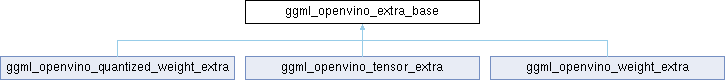

- Generated by
 1.16.1
1.16.1
|
Neura
Gesture and voice-controlled desktop assistant
|

Public Types | |
| enum class | Type { WEIGHT , QUANTIZED_WEIGHT , TENSOR } |
Public Attributes | |
| Type | type |
Protected Member Functions | |
| ggml_openvino_extra_base (Type t) | |